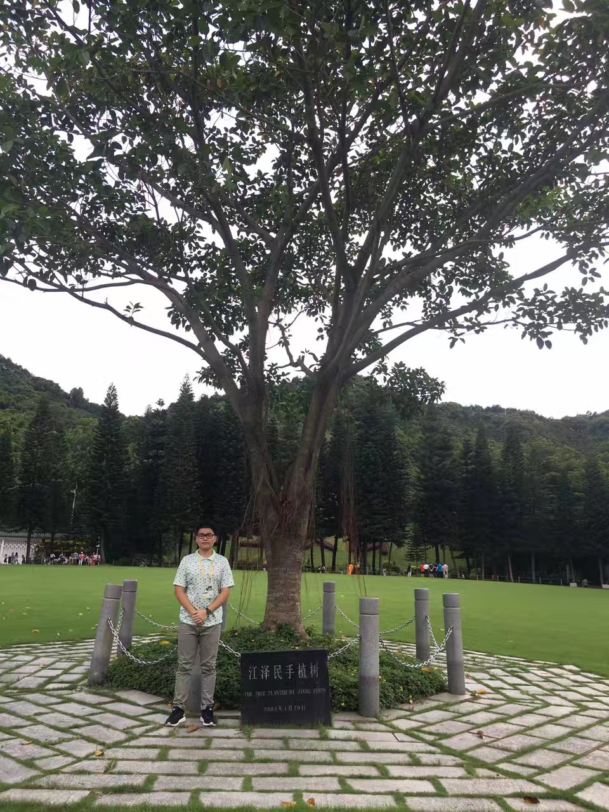

|  | Department of Statistics |
I am now a master student in statistics (graduated in May, 2021) and going to join the Chinese University of Hong Kong as a Ph.D. student in statistics in fall 2021.
Ph.D. student in Statistics, The Chinese University of Hong Kong, 2021.8 -
Visiting Student & M.S. in Statistics, University of Wisconsin-Madison, 2019 - 2021
B.S. in Mathematics and Applied Mathematics, The University of Science and Technology of China (USTC), 2016 - 2020
School of Mathematics
Teaching Assistant
Updating
Research Assistant, Department of Biostatistics and Medical Informatics, UW-Madison, 2020.1 - 2021.1
Research Assistant, Department of Computer Science and Engineering, SUSTech, 2019.7 - 2019.8
Basketball fans, LeBron & Jokic. Also being a member in basketball team in school of mathematics, 2016 - 2019